答卷前，考生务必将自己的姓名、准考证号填写在答题卡上。
回答选择题时，选出每小题答案后，用铅笔把答题卡上对应题目的答案标号涂黑，如需改动，用橡皮擦干净后，再选涂其它答案标号。回答非选择题时，将答案写在答题卡上，写在本试卷上无效。
考试结束后，将本试卷和答题卡一并交回。
原卷第一部分选择题共13小题，每小题6分，共78分；每小题只有一项符合题目要求。本册收录其中生物第1—6题。
原卷第22—32题为必考题，每个试题考生都必须作答；本册收录其中生物第29—32题。
原卷选考题说明：请考生从2道物理题、2道化学题、2道生物题中每科任选一题作答。如果多做，则每学科按所做的第一题计分。生物第37、38题各15分，本册两题均收录供复习。
相关题目：第 1 题 · 第 2 题 · 第 3 题 · 第 4 题 · 第 5 题 · 第 6 题 · 第 29 题 · 第 30 题 · 第 31 题 · 第 32 题 · 第 37 题 · 第 38 题
返回原卷作答说明
题目与已知条件
细胞间信息交流的方式有多种。在哺乳动物卵巢细胞分泌的雌激素作用于乳腺细胞的过程中，以及精子进入卵细胞的过程中，细胞间信息交流的实现分别依赖于
A．血液运输，突触传递 B．淋巴运输，突触传递
C．淋巴运输，胞间连丝传递 D．血液运输，细胞间直接接触
查看原题图／原始配图
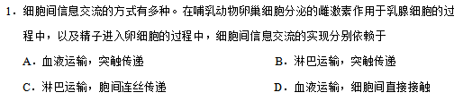
原始配图 1 · 第1题原题图版所用高中知识
内分泌激素经体液运输到靶细胞；精卵识别可由膜表面分子直接接触完成。不同信息方式需结合具体细胞关系判断。
读题与思路
雌激素由卵巢分泌后经血液到乳腺，精卵则依靠直接接触识别；两个环节依次对应血液运输、细胞间直接接触，选D。突触、胞间连丝均不适用于此组合。
分步解析
- 卵巢产生的雌激素进入血液，随血液到达乳腺靶细胞，属于经体液运输的信息传递。
- 精子接触卵细胞后由膜表面识别分子参与识别与结合，属于细胞间直接接触。
- 因此组合为血液运输、细胞间直接接触。突触递质不是精卵识别方式，植物胞间连丝也不适用于动物细胞。
检查与易错点
激素虽由血液广泛运输，只有具相应受体的细胞响应；不能把“运输”误写成激素沿神经冲动传递。
本题来源：paper · doc-supplied
返回原卷作答说明
题目与已知条件
下列关于细胞结构与成分的叙述，错误的是
A．细胞膜的完整性可用台盼蓝染色法进行检测
B．检测氨基酸的含量可用双缩脲试剂进行显色
C．若要观察处于细胞分裂中期的染色体可用醋酸洋红液染色
D．斐林试剂是含有Cu2+的碱性溶液，可被葡萄糖还原成砖红色
查看原题图／原始配图
原始配图 1 · 第2题原题图版
所用高中知识
活细胞膜的选择透过性可排斥台盼蓝；双缩脲检测肽键；碱性染料可染色体；还原糖可还原斐林/斑氏试剂中的Cu²⁺。
读题与思路
逐项核试剂靶物：台盼蓝反映膜完整性，醋酸洋红使染色体着色，斐林反应的红色沉淀来自葡萄糖还原铜离子；双缩脲识别肽键，游离氨基酸没有肽键，所以B错误。题面D实际写斐林试剂。
分步解析
- A：膜完整的活细胞通常不被台盼蓝染蓝，死亡细胞膜受损可被染色，可检测膜完整性。
- B：单个氨基酸没有肽键，不能用双缩脲反应检测氨基酸含量，错误。
- C：醋酸洋红等可使染色体着色，便于观察分裂中期，正确。
- D：斐林试剂是含Cu²⁺的碱性溶液，在加热条件下可被葡萄糖还原，生成砖红色Cu₂O沉淀，正确。
检查与易错点
双缩脲阳性不只限于完整大蛋白，含足够肽键的多肽也可阳性，但游离氨基酸不可。
本题来源：paper · doc-supplied
返回原卷作答说明
题目与已知条件
通常，叶片中叶绿素含量下降可作为其衰老的检测指标。为研究激素对叶片衰老的影响，将某植物离体叶片分组，并分别置于蒸馏水、细胞分裂素（CTK）、脱落酸（ABA）、CTK+ABA溶液中，再将各组置于光下。一段时间内叶片中叶绿素含量变化趋势如图所示，据图判断，下列叙述错误的是
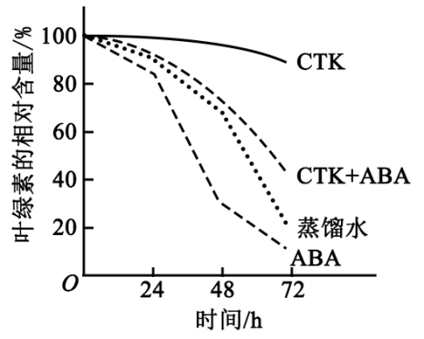
A．细胞分裂素能延缓该植物离体叶片的衰老
B．本实验中CTK对该植物离体叶片的作用可被ABA削弱
C．可推测ABA组叶绿体中NADPH合成速率大于CTK组
D．可推测施用ABA能加速秋天银杏树的叶由绿变黄的过程
查看原题图／原始配图
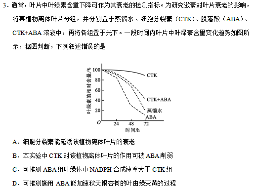
原始配图 1 · 第3题原题图版所用高中知识
叶绿素降解可作为叶片衰老指标。细胞分裂素常延缓衰老，脱落酸可促进衰老；色素减少会削弱吸光和光反应。
读题与思路
同一时刻叶绿素含量CTK最高，CTK+ABA低于CTK，ABA最低，故A、B成立；由叶绿素和光反应联系不能推出ABA组NADPH合成更快，C错误。ABA促进叶绿素减少支持D。
分步解析
- CTK组保留叶绿素最多、下降最慢，说明延缓衰老，A正确。
- CTK+ABA比单CTK下降快，ABA削弱CTK延缓作用，B正确。
- ABA组叶绿素最少，吸光和光反应能力较低，NADPH合成不会因此高于CTK组，C错误。
- 若施用ABA促进叶绿素下降，可加速银杏叶由绿转黄，D符合该机制。
检查与易错点
图测的是叶绿素相对含量，NADPH不是直接测量值，需经“色素→光能吸收→光反应”联系推断。
本题来源：paper · doc-supplied
返回原卷作答说明
题目与已知条件
某同学将一定量的某种动物的提取液（A）注射到实验小鼠体内，注射后若干天，未见小鼠出现明显的异常表现。将小鼠分成两组，一组注射少量的A，小鼠很快发生了呼吸困难等症状；另一组注射生理盐水，未见小鼠有异常表现。对实验小鼠在第二次注射A后的表现，下列解释合理的是
A．提取液中含有胰岛素，导致小鼠血糖浓度降低
B．提取液中含有乙酰胆碱，使小鼠骨骼肌活动减弱
C．提取液中含有过敏原，引起小鼠发生了过敏反应
D．提取液中含有呼吸抑制剂，可快速作用于小鼠呼吸系统
查看原题图／原始配图
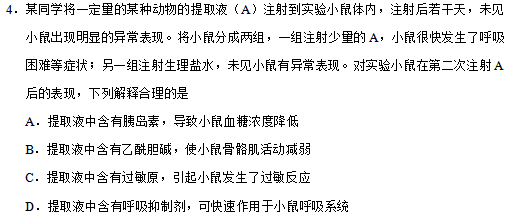
原始配图 1 · 第4题原题图版所用高中知识
过敏反应常在首次接触过敏原后致敏，再次接触时迅速出现。第一次无明显症状并不代表没有建立特异性免疫记忆或致敏状态。
读题与思路
第一次较大量无异常、数天后再给少量却迅速发病，且盐水组正常，指向先致敏后过敏，选C。一般直接药效难解释这种再暴露增强；乙酰胆碱还应兴奋骨骼肌而非使其活动减弱。
分步解析
- 同一提取液首次注射无明显异常，数日后再注少量迅速出现呼吸困难，符合致敏后再次过敏的时间过程。
- 盐水组无异常，排除单纯注射操作及溶剂造成反应。
- 一般毒性、乙酰胆碱作用或呼吸抑制剂若足以致明显症状，不能很好解释首次较大量无症状而再次少量迅速发病的特征。
答案
C：提取液含过敏原，使已致敏小鼠再次发生过敏反应。
检查与易错点
过敏原不是一进入机体就必须致病；题目强调第二次接触及较短潜伏期。
本题来源：paper · doc-supplied
返回原卷作答说明
题目与已知条件
假设某草原上散养的某种家畜种群呈S型增长，该种群的增长速率随种群数量的变化趋势如图所示。若要持续尽可能多地收获该种家畜，则应在种群数量合适时开始捕获，下列四个种群数量中合适的是
A．甲点对应的种群数量
B．乙点对应的种群数量
C．丙点对应的种群数量
D．丁点对应的种群数量
查看原题图／原始配图
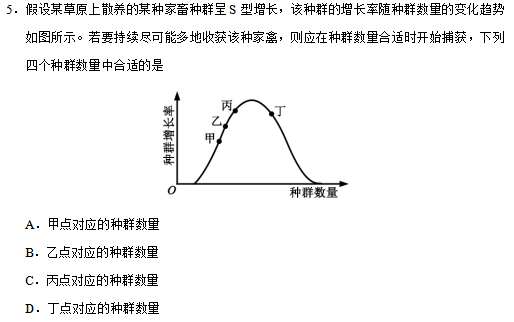
原始配图 1 · 第5题原题图版所用高中知识
逻辑斯谛增长中种群数量约K/2时增长速率最大。持续利用要保留足够繁殖个体，并让捕获后的种群处于较高补充能力区间。
读题与思路
横轴是数量、纵轴是增长速率，峰顶为约K/2；丁在峰右，适度捕获后可回到补充最快的数量区间。甲乙丙在峰左，捕获会进一步降低补充能力，故开始捕获选丁即D。
分步解析
- S形增长条件下，种群数量约K/2时增长速率最大。
- 甲、乙、丙均在峰值左侧，若此时开始捕获，种群数量会进一步偏离K/2，降低后续增长潜力。
- 丁在峰值右侧，适量捕获后可使种群数量回到K/2附近，获得较大补充能力，兼顾当前收获与持续利用。
检查与易错点
“何时开始捕获”与“捕获后保留多少”不是同一问；后者通常接近K/2。题图纵轴是增长速率，不是增长率。
本题来源：paper · doc-supplied
返回原卷作答说明
题目与已知条件
果蝇的红眼基因（R）对白眼基因（r）为显性，位于X染色体上；长翅基因（B）对残翅基因（b）为显性，位于常染色体上。现有一只红眼长翅果蝇与一只白眼长翅果蝇交配，F1雄蝇中有1/8为白眼残翅，下列叙述错误的是
A．亲本雌蝇的基因型是BbXRXr
B．F1中出现长翅雄蝇的概率为3/16
C．雌、雄亲本产生含Xr配子的比例相同
D．白眼残翅雌蝇可形成基因型为bXr的极体
查看原题图／原始配图
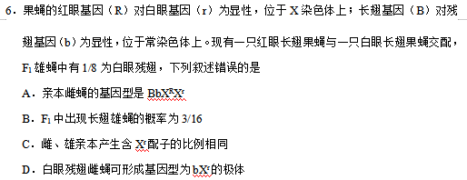
原始配图 1 · 第6题原题图版所用高中知识
长翅B对残翅b显性，眼色R/r位于X。两位点分别在常染色体和X，可按性别、眼色、翅型相乘计算。
读题与思路
限定雄性后白眼残翅=1/8=(1/2)×(1/4)，说明雌为BbXᴿXʳ、雄为BbXʳY。全体子代长翅雄=3/4×1/2=3/8，B的3/16错。两亲本Xʳ配子均占1/2；bbXʳXʳ雌可产生bXʳ极体。
分步解析
- 两亲本都是长翅但有残翅后代，所以均Bb。母本必须带r，又有白眼亲本，故亲本为BbXᴿXʳ雌与BbXʳY雄。
- F₁长翅概率3/4，雄性概率1/2，总后代长翅雄蝇概率3/8，不是3/16，B错误。
- 雌性亲本产生Xʳ配子的比例为1/2；雄性亲本产生Xʳ与Y配子各1/2，因此两亲本产生含Xʳ配子的比例相同，C正确。
- 白眼残翅雌蝇为bbXʳXʳ，减数分裂可产生bXʳ卵及相应极体，D正确。
答案
B。亲本雌为BbXᴿXʳ，雄为BbXʳY；F₁长翅雄蝇占3/8。
检查与易错点
题干“雄蝇中1/8”为条件比例，不能再当全后代比例使用。C比较的是“含Xʳ配子占该亲本全部配子的比例”。
本题来源：paper · doc-supplied
返回原卷作答说明
题目与已知条件
（10分）
根据遗传物质的化学组成，可将病毒分为RNA病毒和DNA病毒两种类型，有些病毒对人类健康会造成很大危害，通常，一种新病毒出现后需要确定该病毒的类型。
假设在宿主细胞内不发生碱基之间的相互转换，请利用放射性同位素标记的方法，以体外培养的宿主细胞等为材料，设计实验以确定一种新病毒的类型，简要写出（1）实验思路，（2）预期实验结果及结论即可。（要求：实验包含可相互印证的甲、乙两个组）
查看原题图／原始配图
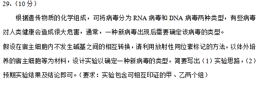
原始配图 1 · 第29题原题图版所用高中知识
DNA特有胸腺嘧啶T，RNA特有尿嘧啶U。病毒依赖活宿主复制，标记必须先进入宿主可用于合成的原料，再检查新生病毒核酸。
读题与思路
把能感染该病毒的宿主细胞分别用标记U、标记T的培养体系培养，再感染并分离纯化新生病毒，检测其核酸。仅U组阳性是RNA病毒，仅T组阳性是DNA病毒；依据是题设无碱基互换且U/T分别为两类核酸特有碱基。
分步解析
- 甲组把宿主细胞培养在含放射性标记尿嘧啶的培养体系，使RNA合成原料被标记；乙组使用放射性标记胸腺嘧啶，其他条件相同。
- 分别感染待测病毒，培养足够复制周期后收集、分离纯化新生病毒，洗去游离标记和宿主残留，再测病毒核酸放射性。
- 若甲中新生病毒核酸有标记而乙无，说明含RNA，为RNA病毒；若甲无而乙有，则为DNA病毒。
- 前提是题设碱基不相互转化，宿主可利用所加标记原料，且只比较纯化的新生病毒核酸；可配不加放射标记的背景对照。
答案
甲用标记尿嘧啶，乙用标记胸腺嘧啶分别培养宿主并感染；纯化子代病毒测放射性。仅甲阳性为RNA病毒，仅乙阳性为DNA病毒。
检查与易错点
不能把病毒直接放普通无细胞培养基培养；不能用P或共有碱基作唯一标记区分，因为DNA、RNA都可能含这些元素或碱基。
本题来源：paper · doc-supplied
返回原卷作答说明
题目与已知条件
（9分）植物的CO2补偿点是指由于CO2的限制，光合速率与呼吸速率相等时环境中的CO2浓度，已知甲种植物的CO2补偿点大于乙种植物的，回答下列问题：
（1）将正常生长的甲、乙两种植物放置在同一密闭小室中，适宜条件下照光培养，培养后发现两种植物的光合速率都降低，原因是________，甲种植物净光合速率为0时，乙种植物净光合速率________（填“大于0”“等于0”“小于0”）。
（2）若将甲种植物密闭在无O2、但其他条件适宜的小室中，照光培养一段时间后，发现植物的有氧呼吸增加，原因是________。
查看原题图／原始配图
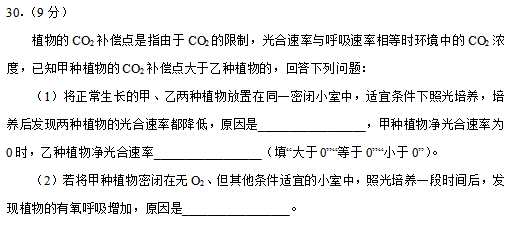
原始配图 1 · 第30题原题图版所用高中知识
CO₂补偿点是在CO₂限制下总光合等于呼吸的外界CO₂浓度。补偿点低的植物可在更低CO₂下维持非负净光合；光反应释氧可以供自身呼吸。
读题与思路
密闭光照净消耗CO₂，使两植物净光合随时间下降。甲补偿点较高，当甲净光合为0时同室CO₂仍高于乙补偿点，故乙大于0；初始无氧不等于始终无氧，甲光反应产氧可促进自身有氧呼吸。
分步解析
- 开始光照后植物总光合消耗CO₂超过呼吸释放，密闭小室CO₂逐渐下降，限制碳固定，使两者净光合降低。
- 甲补偿点高。当CO₂降至甲补偿点、甲净光合0时，仍高于乙补偿点，所以乙净光合大于0。
- 甲处于初始无O₂的小室，光合作用水光解释放O₂，使局部氧供增加，呼吸末端电子传递可加快，有氧呼吸增强。
答案
（1）密闭室内净消耗CO₂使其浓度下降、限制光合；大于0。（2）光合作用产氧使小室O₂增加，为有氧呼吸提供氧。
检查与易错点
不应只答“CO₂少了”，要说明为何在光下净减少；“无O₂”是初始条件，光照后植物可自己改变这一条件。
本题来源：paper · doc-supplied
返回原卷作答说明
题目与已知条件
（8分）血浆渗透压可分为胶体渗透压和晶体渗透压，其中，由蛋白质等大分子物质形成的渗透压称为胶体渗透压，由无机盐等小分子物质形成的渗透压为晶体渗透压。回答下列问题：
（1）某种疾病导致人体血浆蛋白含量显著降低时，血浆胶体渗透压降低，水分由_______进入组织液，可引起组织水肿等。
（2）正常人大量饮用清水后，胃肠腔内的渗透压下降，经胃肠吸收进入血浆的水量会________，从而使血浆晶体渗透压_______。
（3）在人体中，内环境的作用主要为：①细胞生存的直接环境，②________。
查看原题图／原始配图
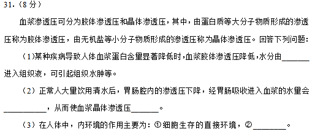
原始配图 1 · 第31题原题图版所用高中知识
血浆胶体渗透压主要由蛋白质产生，晶体渗透压主要由小分子无机盐等产生。水的净移动从较低渗透压一侧向较高渗透压一侧。
读题与思路
血浆蛋白减少使胶体渗透压降低，水由血浆转入组织液。饮水后胃肠腔渗透压降低，吸收入血的水增加，稀释血浆小分子而使晶体渗透压降低；内环境也是细胞同外界物质交换的媒介。
分步解析
- 血浆蛋白明显降低使血浆胶体渗透压下降，血浆留水能力减弱，水由血浆进入组织液，可致组织水肿。
- 饮入较多清水降低消化道腔内渗透压，进入血液的水量增加，稀释血浆小分子，使晶体渗透压降低。
- 内环境不仅是细胞直接生活环境，也是组织细胞与外界物质交换的媒介；细胞获得营养和排出废物均经内环境连接。
答案
（1）血浆。（2）增加；降低。（3）细胞与外界环境进行物质交换的媒介。
检查与易错点
血浆不等于全血；红细胞内液不属于内环境。胶体渗透压降低的水肿不能直接套到所有水肿原因。
本题来源：paper · doc-supplied
返回原卷作答说明
题目与已知条件
（12分）某种羊的性别决定为XY型，已知其有角和无角由位于常染色体上的等位基因（N/n）控制；黑毛和白毛由等位基因（M/m）控制，且黑毛对白毛为显性，回答下列问题：
（1）公羊中基因型为NN或Nn的表现为有角，nn无角；母羊中基因型为NN的表现为有角，nn或Nn无角。若多对杂合体公羊与杂合体母羊杂交，则理论上，子一代群体中母羊的表现型及其比例为_____；公羊的表现型及其比例为________。
（2）某同学为了确定M/m是位于X染色体上，还是位于常染色体上，让多对纯合黑毛母羊与纯合白毛公羊交配，子二代中黑毛∶白毛=3∶1，我们认为根据这一实验数据，不能确定M/m是位于X染色体上，还是位于常染色体上，还需要补充数据，如统计子二代中白毛个体的性别比例，若
________，则说明M/m是位于X染色体上；若________，则说明M/m是位于常染色体上。
（3）一般来说，对于性别决定为XY型的动物群体而言，当一对等位基因（如A/a）位于常染色体上时，基因型有____种；当其位于X染色体上时，基因型有____种；
当其位于X和Y染色体的同源区段时，（如图所示），基因型有____种。
查看原题图／原始配图
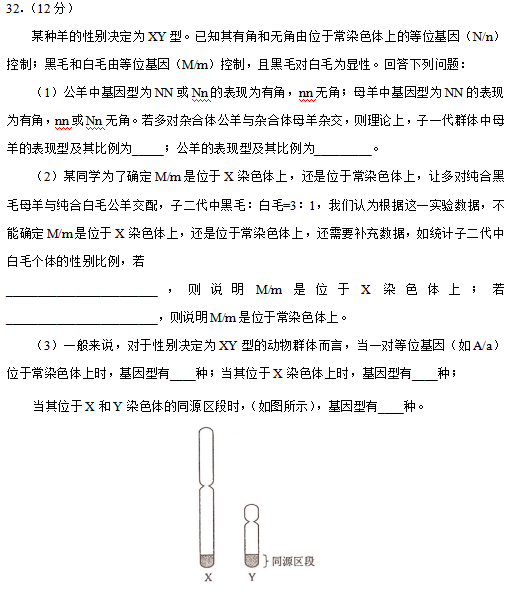
原始配图 1 · 第32题原题图版所用高中知识
同一常染色体基因型可在雌雄中有不同显隐表现，称从性遗传；伴性遗传则基因位于性染色体。统计基因型数须分别列XX和XY。
读题与思路
Nn×Nn为1NN:2Nn:1nn，分别按母羊只有NN有角、公羊NN与Nn有角归类，得1:3及3:1。纯黑母×白父的F₂白毛全雄支持X连锁，雌雄各半支持常染色体。常染色体有3型、X特有区雌3雄2共5型、XY同源区雌3雄4共7型。
分步解析
- Nn×Nn得到NN∶Nn∶nn=1∶2∶1。母羊只有NN有角，故有角∶无角=1∶3；公羊NN、Nn有角，为3∶1。
- 若M/m在X上，亲本纯合黑毛母羊XᴹXᴹ×白毛公羊XᵐY，F₁雌XᴹXᵐ、雄XᴹY。F₁相互交配的F₂中雌性均有父源Xᴹ，白毛只见于XᵐY雄性。若在常染色体，F₁均Mm，F₂白毛mm在雌雄中概率相同，白毛雌雄1∶1。
- 常染色体A/a有AA、Aa、aa共3种。X特有区：雌XᴬXᴬ、XᴬXᵃ、XᵃXᵃ，雄XᴬY、XᵃY，共5。
- XY同源区：雌仍3种；雄XᴬYᴬ、XᴬYᵃ、XᵃYᴬ、XᵃYᵃ共4，总共7种。
答案
（1）母羊有角∶无角=1∶3；公羊为3∶1。（2）白毛全为雄性，则M/m位于X；白毛雌雄=1∶1，则在常染色体。（3）3；5；7。
检查与易错点
N/n在常染色体，不是X连锁；表型受性别影响并不等于伴性遗传。原题（2）明确观察“子二代”，不能漏掉F₁相互交配这一代。
本题来源：paper · doc-supplied
返回原卷作答说明
题目与已知条件
[生物——选修1：生物技术实践]（15分）某些土壤细菌可将尿素分解成CO2和NH3，供植物吸收和利用。回答下列问题：
（1）有些细菌能分解尿素，有些细菌则不能，原因是前者能产生________。能分解尿素的细菌不能以尿素的分解产物CO2作为碳源，原因是________，但可用葡萄糖作为碳源，进入细菌体内的葡萄糖的主要作用是________（答出两点即可）。
（2）为了筛选可分解尿素的细菌，在配制培养基时，应选择________（填“尿素”“NH4NO3”或“尿素+NH4NO3”）作为氮源，不选择其他两组的原因是________。
（3）用来筛选分解尿素细菌的培养基含有KH2PO4和Na2HPO4，其作用有________（答出两点即可）。
查看原题图／原始配图
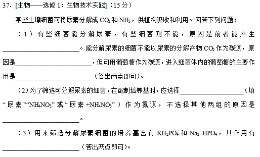
原始配图 1 · 第37题原题图版所用高中知识
尿素分解需脲酶。异养菌不能把CO₂作为唯一碳源，葡萄糖既供能也作细胞合成原料。不给其他可利用氮源可筛选尿素分解菌。
读题与思路
分解尿素须脲酶；题述菌为异养型，不能直接用CO₂供碳，葡萄糖同时供能和合成原料。只给尿素作氮源才形成选择压力，另两配方均有NH₄NO₃；两种磷酸盐提供无机营养且缓冲pH。
分步解析
- 能分解尿素者可合成脲酶；这类题给细菌为异养型，不能利用CO₂合成所需有机物。
- 葡萄糖通过呼吸等分解释放能量，同时为合成细胞各成分提供碳骨架原料。
- 选择尿素作唯一氮源。NH₄NO₃可供非尿素分解菌利用，单用它或与尿素合用都不能保留所需选择压力。
- KH₂PO₄与Na₂HPO₄提供无机营养成分，并构成磷酸盐缓冲体系，减小生长代谢导致的pH波动。
答案
（1）脲酶；该菌为异养生物，不能以CO₂合成有机物；提供能量、提供细胞合成原料。（2）尿素；其他两组均含可供一般细菌利用的NH₄NO₃，不能有效筛选。（3）提供无机盐营养、缓冲pH。
检查与易错点
并非所有细菌都不能用CO₂；此处限定于题述异养尿素分解菌。选择培养基仍要满足碳源、水、无机盐等基本需求。
本题来源：paper · doc-supplied
返回原卷作答说明
题目与已知条件
[生物——选修3：现代生物科技专题]（15分）真核生物基因中通常有内含子，而原核生物基因中没有，原核生物没有真核生物所具有的切除内含子对应的RNA序列的机制。已知在人体中基因A（有内含子）可以表达出某种特定蛋白（简称蛋白A）。回答下列问题：
（1）某同学从人的基因组文库中获得了基因A，以大肠杆菌作为受体细胞却未得到蛋白A，其原因是________。
（2）若用家蚕作为表达基因A的受体，在噬菌体和昆虫病毒两种载体中，不选用________作为载体，其原因是________。
（3）若要高效地获得蛋白A，可选用大肠杆菌作为受体，因为与家蚕相比，大肠杆菌具有
________（答出两点即可）等优点。
（4）若要检测基因A是否翻译出蛋白A，可用的检测物质是________（填“蛋白A的基因”或“蛋白A的抗体”）。
（5）艾弗里等人的肺炎双球菌转化实验为证明DNA是遗传物质做出了重要贡献，也可以说是基因工程的先导，如果说他们的工作为基因工程理论的建立提供了启示，那么，这一启示是
________。
查看原题图／原始配图
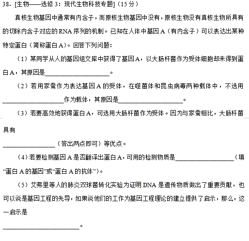
原始配图 1 · 第38题原题图版所用高中知识
真核基因可含内含子，需要转录后剪接；大肠杆菌不具有相应真核RNA剪接机制。病毒载体的宿主范围决定能否感染受体。
读题与思路
基因组A含内含子，原核宿主不能剪除相应RNA，难形成正确编码序列。噬菌体只能侵染细菌，不能用作家蚕载体；大肠杆菌繁殖快且易培养。译出蛋白A须用其特异抗体检测；肺炎链球菌转化揭示DNA可转移并改变受体遗传性状。
分步解析
- 从人基因组文库取得的A含内含子，在大肠杆菌中不能按真核方式去除对应RNA序列，难形成正确mRNA并表达目标蛋白。可通过成熟mRNA逆转录取得不含内含子的编码序列解决。
- 家蚕是昆虫，噬菌体宿主为细菌，因此不能用噬菌体作为家蚕表达载体；昆虫病毒具有适合宿主范围。
- 大肠杆菌繁殖快、培养简便、周期短，适于大量培养生产。
- 检测是否翻译出蛋白A用抗蛋白A的特异抗体，抗原—抗体检测可提供蛋白表达证据。
- 肺炎链球菌转化实验说明外源DNA可进入另一细胞并改变其遗传性状，为基因转移提供思想先导。
答案
（1）含内含子的原始转录产物在大肠杆菌中不能正确剪接。（2）噬菌体；其宿主是细菌而非家蚕。（3）繁殖快、容易培养等两点。（4）蛋白A的抗体。（5）DNA可从一种细胞转入另一种细胞，并使受体获得相应遗传性状。
检查与易错点
导入了基因不等于一定正常表达。核酸探针回答是否有基因/转录本，抗体回答是否有相应蛋白；不可相互替换。
本题来源：paper · doc-supplied
题源与核验说明
- 2017年高考真题——理综（全国I卷） Word版含解析【KS5U 高考】.doc所附参考资料；SHA-256：5c339bc8f9867e999b693bb61258623277341133be793f4c4e5203b83b77e28b
- 河南省阳光高考：2017全国Ⅰ卷理综试题及答案题面核对范围：生物题在第1–3、12–14、17–18图。所附Word有第4题“第一次”、第5题“增长率/家禽”等转录异文，本册依联网原题图保留第二次、增长速率、家畜；解析自行按题意推导。